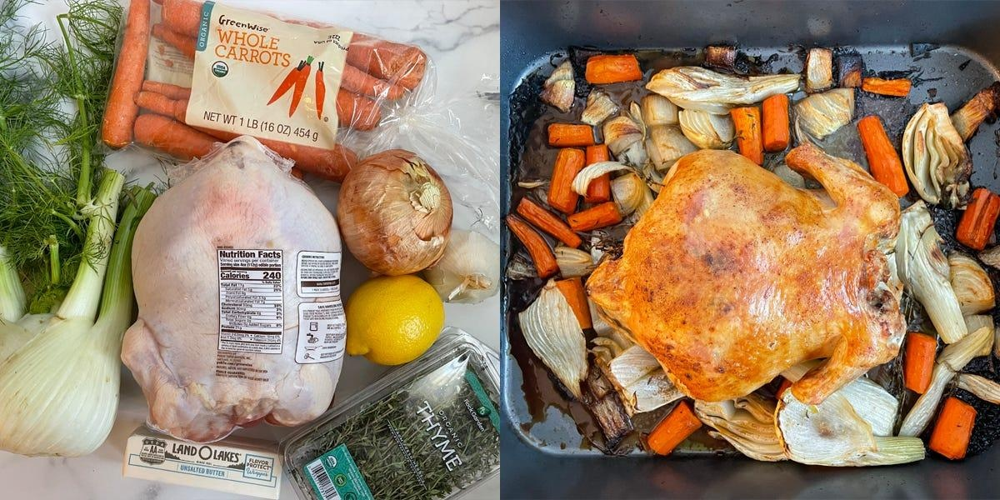

Trying Ina Garten's Recipe for Perfect Roast Chicken + PhotosI cook a decent amount at home, but I generally try to avoid handling raw chicken. It grosses me out, and whenever I cook with it, I never feel like I can get my cutting boards, knives, kitchen utensils, and sink clean enough afterward. But I've always wanted to roast a whole chicken, even if I've been intimidated by the process. When I saw Ina Garten's recipe for "perfect" roast chicken, I decided to give it a go. The accompanying video on the recipe page made it look fairly straightforward, so I was excited to learn how to cook (and carve) a whole bird. First I prepped the vegetables. Garten's recipe called for prepping the chicken first, but I opted to peel and slice all my vegetables ahead of time so I'd only have to thoroughly wash my knife and cutting board once (and help avoid cross contamination). I sliced a large yellow onion, peeled and cut the carrots, and cut a fennel bulb into wedges. Once all the vegetables were prepped, I put them into a roasting pan and tossed them with olive oil, some thyme sprigs, and Tony Chachere's Creole Seasoning. Garten's recipe called for salt and pepper, but I don't love the taste of black pepper, so I use Tony's in most of my cooking instead. I also sliced a lemon in half and cut a head of garlic crosswise for stuffing into the chicken. Then it was time to get the chicken ready. The part of the cook I was dreading most had come. I watched a YouTube video on how to remove chicken giblets, put on some plastic gloves for handling the chicken, and cut into the plastic wrapping around the $13 bird I bought at the grocery store. The food-safe plastic gloves were definitely a worthwhile buy and gave me peace of mind. If you're also wary of handling raw chicken, I'd definitely recommend picking up a pack. I fished around the inside of the chicken for a few minutes before figuring out that the neck and giblets had already been removed (lesson learned, read the product packaging). I proceeded to rinse the inside and outside of the chicken, per Garten's instructions. But the USDA advises against this because bacteria can spread across your kitchen, and I'd skip this step in the future. I seasoned and stuffed the chicken before putting it in the oven. I put a few layers of paper towels on my cutting board to pat the outside of the chicken dry after washing. Following Garten's instructions, I then seasoned the inside of the chicken (once again subbing Tony's for salt and pepper), and stuffed it with lemon, garlic, and thyme. I melted some butter in the microwave and brushed it on the outside before sprinkling it with even more Tony's. Lastly, I placed the chicken on top of the vegetables in the roasting rack, tied the legs together with kitchen string (provided by the butcher from my local grocery store), and tucked the wing tips under the chicken. I baked the chicken for an hour and a half, which made my house smell amazing. I placed the roasting pan in a preheated oven at 425 degrees Fahrenheit and let the chicken and vegetables bake. Garten's recipe said to roast the chicken for an hour and a half, or until the juices run clear when you cut into it. After 10 minutes, the smell of thyme started to fill my house. By the time I was supposed to take out the chicken, I couldn't wait to eat it. The chicken skin was beautifully brown and crispy out of the oven. The chicken looked delicious right out of the oven, and I was so proud of how well it came out. I put some aluminum foil over the roasting pan and let it rest for 20 minutes before carving into it. In the recipe video, Garten puts the vegetables back into the oven while the chicken rests, but my vegetables were plenty caramelized and didn't need additional oven time. Once the chicken was done resting, I carved it (with the help of another YouTube video), and served it on a plate with some of the roasted vegetables. I found the finished product a bit dry — the vegetables ended up being the star. Sadly, the chicken skin lost its crispness while resting. I ended up liking the vegetables more — they were deliciously tender after soaking up the herby flavors of thyme and the juices from the chicken. The chicken itself was a bit dry. I chose a bird on the smaller end of Garten's recommendation, so I probably should've checked on it earlier. I'm proud to have finally cooked a whole chicken. But for $35 (for all the ingredients) and the amount of effort I put into the process (particularly cleaning and sanitizing my kitchen), I'd rather buy a premade roast chicken from the grocery store. If I were to make this recipe again, I'd double (or even triple) the vegetables and maybe add in some potatoes since I really enjoyed the flavors from the roasting process. |
 |